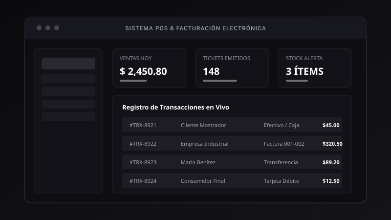
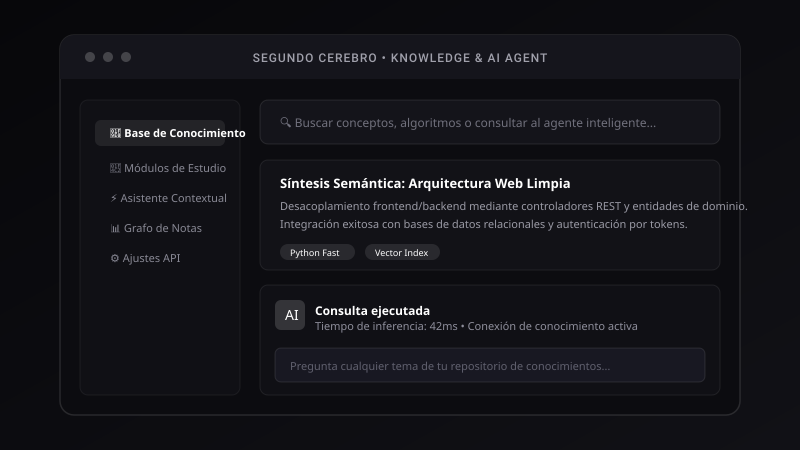
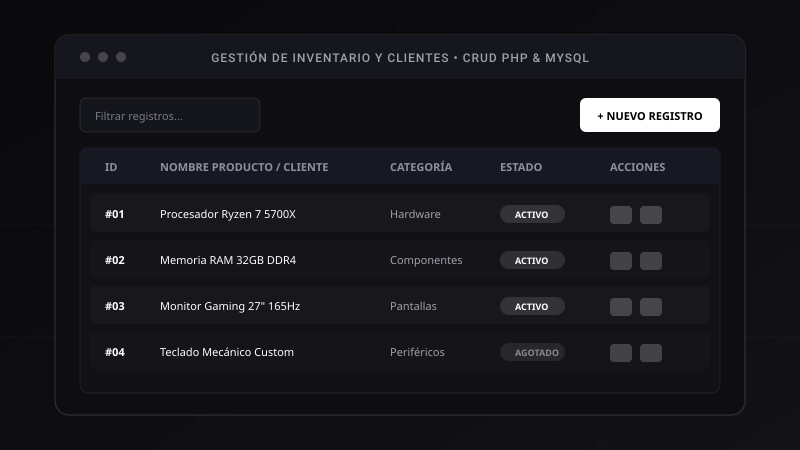

Desarrollador de Software Junior enfocado en la creación de aplicaciones web responsivas, sistemas de información y soluciones digitales sobrias, eficientes y escalables.
Construyendo software con rigor técnico, enfoque Mobile First y pasión por el diseño limpio.
Soy estudiante de 5to semestre de la carrera de Tecnologías de la Información en la Universidad de las Fuerzas Armadas ESPE. Mi formación combina sólidos fundamentos de programación estructurada y orientada a objetos, arquitectura web cliente-servidor y administración de bases de datos.
Me caracterizo por abordar cada proyecto priorizando la experiencia del usuario, la semántica del código y un diseño sobrio de inspiración premium. Aplico metodologías ágiles y principios de optimización para asegurar que cada interfaz funcione con fluidez en cualquier dispositivo.
Estructuras pensadas primero para dispositivos móviles mediante las clases de utilidad Flexbox y el sistema responsivo de Bootstrap 5.
Desarrollo de lógica transaccional, consultas parametrizadas y modelos de datos normalizados para sistemas comerciales.
Flujo continuo con ramas, commits descriptivos y despliegue automatizado en la nube con GitHub Pages.
Sistemas implementados aplicando arquitectura cliente-servidor, componentes de Bootstrap 5 y buenas prácticas de desarrollo web.

Aplicación web comercial completa para control de inventario en tiempo real, registro ágil de ventas por mostrador, cálculo de impuestos, alertas de stock mínimo y emisión de comprobantes.

Plataforma de gestión de conocimiento personal y apuntes académicos conectada a un asistente contextual. Permite indexar recursos, generar síntesis de estudio y buscar conceptos en milisegundos.

Módulo web interactivo enfocado en operaciones Create, Read, Update y Delete. Cuenta con validación síncrona y asíncrona, sanitización de entradas, paginación dinámica y diseño 100% responsivo.
Dominio de lenguajes, frameworks y herramientas aprendidas en la carrera y proyectos prácticos.
Insignias representativas de las herramientas de productividad, versionado y entorno de desarrollo empleadas activamente:
¿Tienes una oportunidad de proyecto o pasantía? Escríbeme directamente por correo o a través de mis redes sociales.
Completa el formulario para redactar un mensaje directo a mi correo: